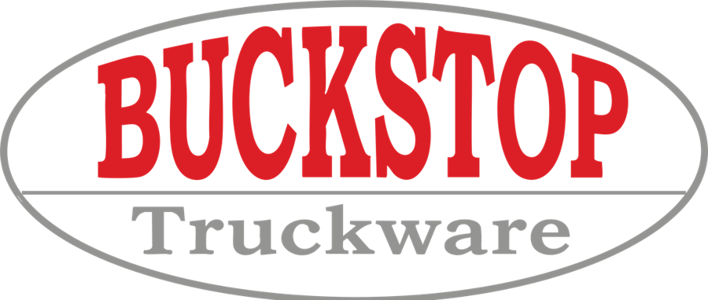
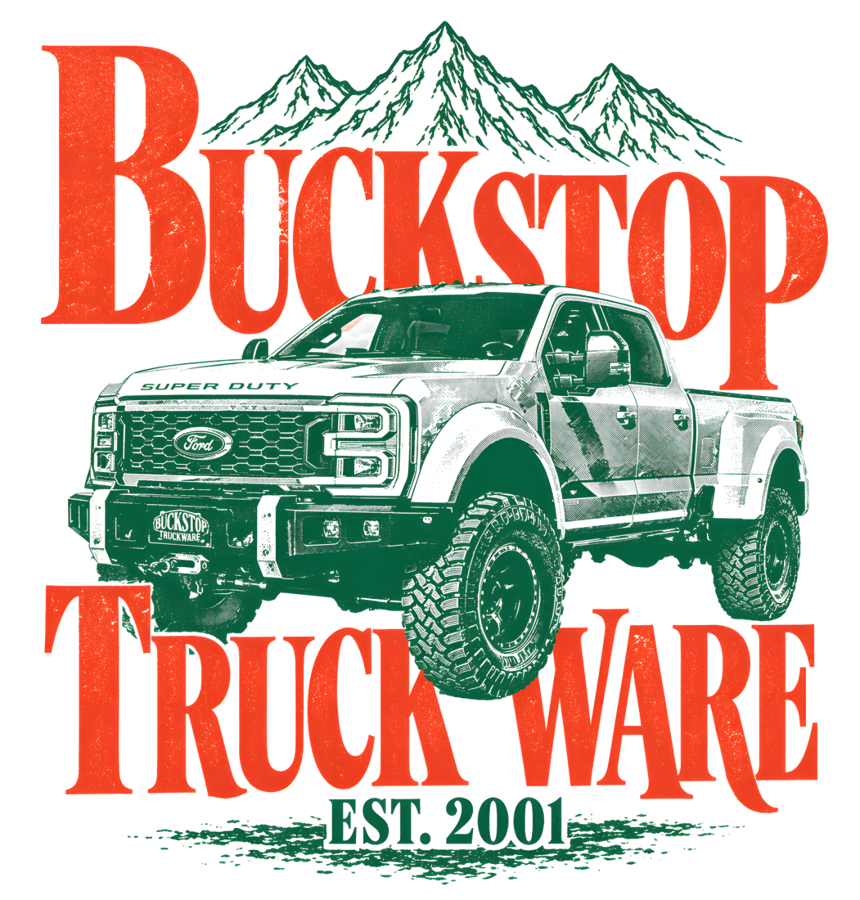
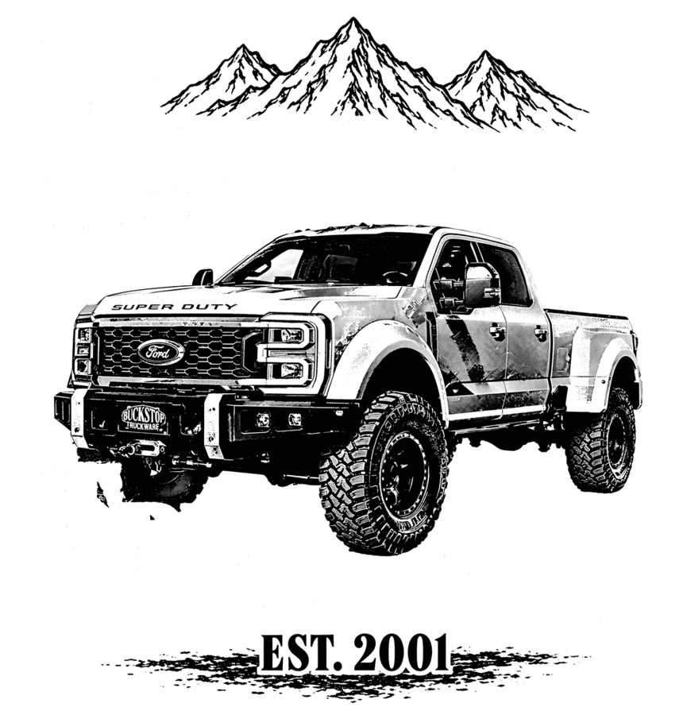
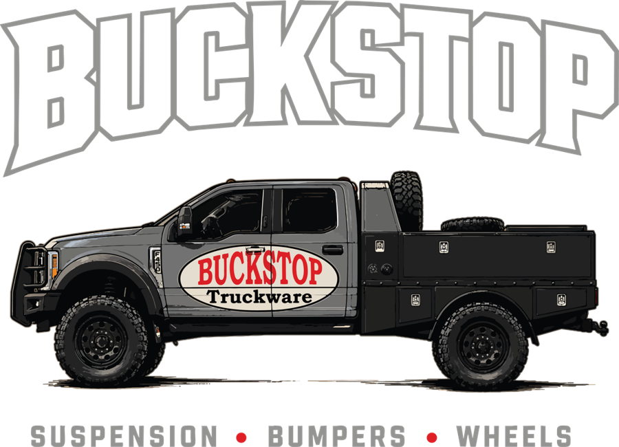
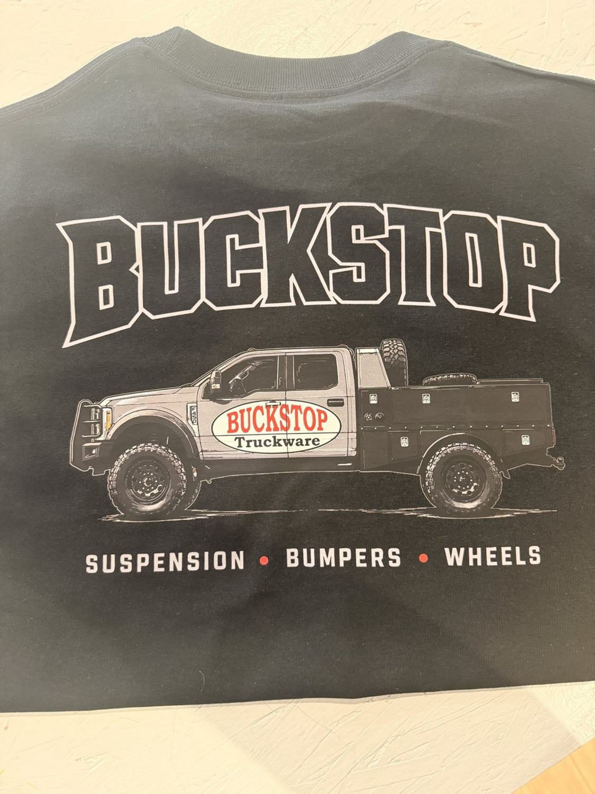
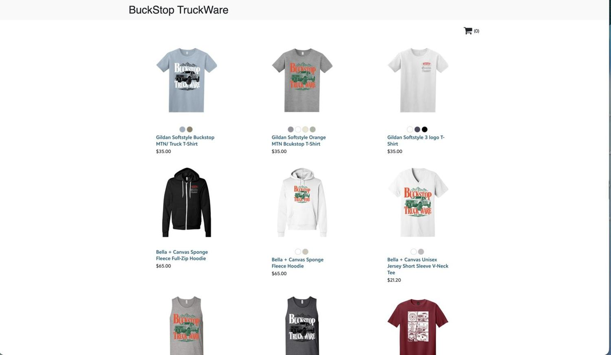
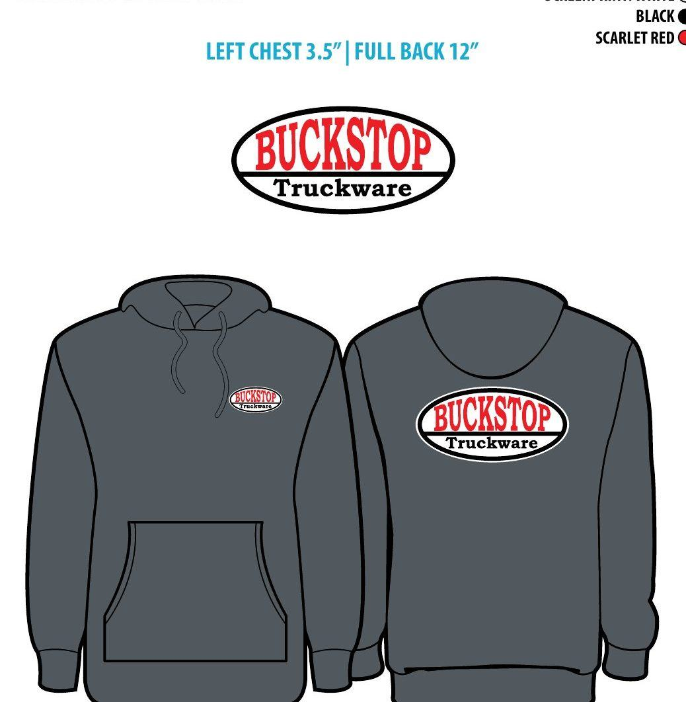

Buckstop Truckware has been in Central Oregon since 2001. The old oval could have belonged to anyone. The new mark puts the truck front and center, in two colors and one, so it works on a tailgate, a tee, and a hat.







Ian Ricketts · work.bestfrend.xyz · ianricketts188@gmail.com